Schwarzpulver
Das Improvisationstheater der HTWK Leipzig

... das studentische Improvisationstheater in Leipzig. Wir sind selbstgemacht, selbstverwaltet und auch ziemlich awesome. Unsere Heimat ist die HTWK Leipzig, unsere Mitglieder sind von überall.
Schwarzpulver wurde 2015 mit dem Ziel gegründet, interessierten Studierenden einen einfachen Zugang zum Improtheater zu bieten. Wir sind der Überzeugung, dass jede gescheite Uni eine (Impro-)Theatergruppe haben sollte, und dieses Loch wurde von Schwarzpulver gestopft.
Seitdem ist die Gruppe stark gewachsen und besteht aus Spielern mit unterschiedlichster Erfahrung im Spielen, von wenigen Monaten bis hin zu mehreren Jahren. Wir versuchen, weiterhin offen für neue Spieler zu bleiben und dabei ebenso Entwicklungsmöglichkeiten für erfahrene Spieler zu bieten.
Unsere Spezialität ist die freie Kurzform: 1 Bühne, 2 Spieler, 10 Minuten, let's go. Keine Games, keine Gimmicks, Vorgaben sind optional. Manchmal lacht man, manchmal weint man, im besten Fall beides gleichzeitig. Wir sind dann zufrieden, wenn die Geschichte auf dem Punkt ist.
Unsere Ursprünge liegen in den klassischen Improgames: Freeze, Change, Genre-Replay usw. Manchmal spielen wir auch heute noch ein paar Games, um die Sau rauszulassen.
Unsere ferne Zukunft liegt in der Langform: 1 Bühne, viele Spieler, 1 Stunde, let's... go? Wir sagen euch Bescheid, sobald wir den Dreh raus haben.
Wir sind offen für neue Mitglieder! Wir proben regelmäßig einmal pro Woche in der HTWK Leipzig. Bereits vorhandene Theatererfahrung wäre schön, aber ist kein Muss. Auch Nicht-Studierende sind willkommen. Wenn du interessiert bist, schreib uns einfach eine paar Zeilen über dich, und wir antworten dir baldmöglichst.
Das Schöne am Improvisationstheater ist ja, dass man wenig mehr braucht als eine Bühne, Licht und Stühle. Gerne lockern wir deine Familien- oder Firmenfeier mit einem Auftritt auf.
Auch für Workshops kann man uns buchen. Egal ob das kleine 1 mal 1 des Impro, oder tiefer Lehrgang über die Kunst der freien Szene. Wir freuen uns über deine Nachricht!